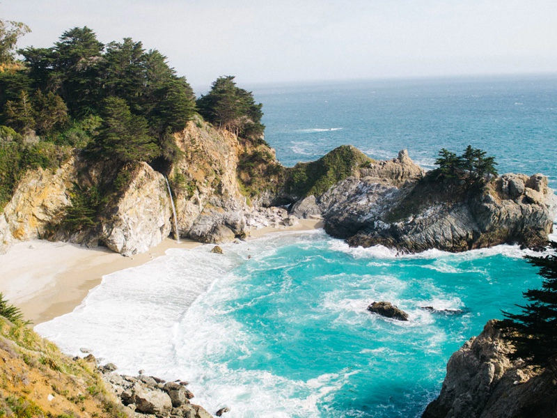

São lembranças das fotografias que estão guardadas com muito amor. Momentos felizes foram registrados.
Em cada foto tem seu fato marcado.
Muitas histórias aqui reunidas. São linhas da vida da minha família. Pessoas por mim muito queridas.
Recordando com muitas saudades.
Estão todos aqui bem visual. Muitas fotos vão se tirando. Alguns membros partindo. E outros
chegando.
A Família sempre aumentando. Velhos e novos se encontrando. Gerações e gerações se abraçando.
Família
A natureza nos uniu em uma imensa família, e devemos viver nossas vidas unidos, ajudando uns aos
outros.
Album de Fotos
Fotografia nada mais é do que um cálculo onde as variáveis de soma são luz e criatividade,
elevadas a paixão daquele momento.
Agenda
Façamos da interrupção um caminho novo.
Da queda um passo de dança,
do medo uma escada,
do sonho uma ponte, da procura um encontro!
Tradição
O amor é um ato.
O amor é um fato.
Novidade, história antiga, conto, resenha e poesia.

Del Pino
Sobrenomes não são apenas sons e palavras. Eles se originaram da necessidade de descrever a pessoa
ou a identificá-las mais facilmente.
Antigamente, esses nomes adicionais eram como “apelidos” e não nomes de família. Eles eram
descartados à medida que as gerações sucediam-se,
pois descreviam apenas uma pessoa e não toda a família. Os sobrenomes passaram a ter significado
que
tem hoje a partir da Idade Média.
O sobrenome espanhol Pino é de origem toponímica. Nomes toponímicos são aqueles que originam-se de
um lugar em particular.
O nome relaciona-se ao lugar onde a pessoa morava, ou às terras que o indivíduo possuía. Neste caso,
o sobrenome faz parte de um conjunto de sobrenomes espanhóis..
Fazem parte desse grupo os sobrenomes Pino del Rio e Pino de Dal, por exemplo.
A palavra Pino deriva-se do nome que se dá à árvore do gênero pinus. Isso explica porque o brasão de
algumas ramificações da família Pino mostra um pinheiro.
Assim, o brasão original do sobrenome refere-se a um lugar chamado Pino ou a uma moradia próxima a
um pinheiro.
Um dos primeiros registros desse sobrenome é referente a Carlos Rodrigues de Pino, casado com Maria
del Pino e Monsalve, em 1693.
Há também o registro do testamento de Maria Antonia del Pino em La Plata, em 1764. O prefixo
espanhol del significa ”de(o)” e indica o local de origem do sobrenome.
Um notável portador do sobrenome Pino é o soldado espanhol e administrador colonial Joacquin del
Pino, morto em 1804.
Brasão de armas: Em um pátio verde, um leão vermelho bravo, diante de uma árvore do protetor.
Família
A família pode ser uma de nossas maiores fontes de felicidade. Nenhum amor é tão profundo, nenhuma
alegria tão plena quanto aquela que pode existir dentro do círculo familiar. A família pode
ajudar-nos a receber o melhor que a vida tem a oferecer.
Assim como com todas as outras coisas de valor, o relacionamento familiar dá trabalho, mas vale a
pena; porque a família foi feita para ficar junta para sempre e para dar-nos alegria.
Cândido Acauan Nery


Cândido Acauan Nery